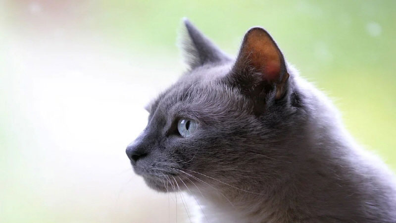

고양이가 캣닙을 사랑하는 이유!
캣닙(Catnip)의 정확한 명칭은 '네페타 카타리아' 입니다. 남아프리카와 지중해에서 유래된 꿀풀과에 속하며, 고양이 풀 또는 고양이 민트라고 불리기도 합니다. 캣닙은 일반 잔디처럼 생겼지만, 따뜻한 기후에서는 40cm 이상 자랄만큼 높이 자라고 조금 더 뚜렷한 특징이라면 '박하향'이 난다는 것입니다.
* 고양이가 캣닙을 사랑하는 이유?
캣닙에는 고양이를 유혹하는 '네페탈락톤' 활성 성분이 함유되어 있습니다. 이 활성 성분은 공기 중에 흩날리고 고양이 콧속을 자극하고 흥분제 역할을 해, 마치 짝짓기와 유사한 행동을 보이게 됩니다. 즉, 고양이가 캣닙의 성분을 느끼게 되면 식물에 몸을 비비게 되고 이후 행복함을 느끼게 됩니다. 일종의 최면에 걸리게 되는 것으로 박하 향이 고양이를 자극하게 되고 달리거나 이리저리 폴짝 뛰며 활발한 활동을 보이는 것이죠.
이 외에도 '야옹~'하고 울거나 바닥에 몸을 비비면서 여러 가지 행동을 보이게 되는데 이 모든 행동은 기분이 좋아지는 행동으로 보면 좋을 것입니다.
* 고양이에게 무조건 좋은 것일까?
아무래도 '최면' 효과라 하니, 부작용이 있지는 않을까 걱정할 집사도 있을 것입니다. 캣닙 자체만으로는 위험하지 않지만, '과유불급'이라고 과도할 경우 지나친 행동으로 이어질 수 있고 이것이 주변 사람에게 피해로 이어질 수 있습니다. 따라서, 특별히 나쁜 부작용은 없지만 과한 사용으로 문제가 발생하지 않도록 조치를 취하는 것은 필요합니다.
박하 향으로부터 떼어 놓고 평정심을 되찾을 때까지 기다린 뒤에는 여느 때와 같은 사랑스러운 반려묘의 모습을 되찾을 것입니다.
* 고양이에게 캣닙이 좋은 이유!
캣닙은 이미 고양이가 좋아하고 또 장난감으로도 활용되고 있는 만큼 소량으로 장점을 충분히 발휘할 수 있는 식물입니다.
1) 놀이에 적극적으로 활용할 수 있습니다.
박하 향에 기뻐 날뛰는 반려묘! 상상만으로도 행복한 모습이 그려지지 않나요? 독립적이고 조용한 자세를 취하고 있지만, 가끔은 활동적인 모습을 보여줘도 나쁘지 않습니다. 필요하다면, 소량의 캣닙으로 또 다른 반려묘의 모습을 그려 보세요.
2) 비만묘, 체중 조절 운동에 좋습니다.
활동성을 높이는 캣닙! 움직이는 걸 극히 싫어하는 반려묘라면, 캣닙을 활용해서 운동을 유도하는 것도 하나의 방법이 될 수 있겠죠.
3) 정신 건강을 즐겁게 합니다.
앞서 말씀드린 것처럼 고양이는 캣닙을 통해 행복감을 느끼기도 합니다. 평소 스트레스를 많이 받은 반려묘라면, 캣닙으로 행복감을 전해줘도 나쁘지 않을 것 같네요!
우리 집 반려묘! 행복한 시간을 전해주고 싶다면, 캣닙을 활용해 보세요. 그 어느 때보다 행복한 반려묘의 모습을 볼 수 있을 거예요.
[출처] 고양이가 캣닙을 사랑하는 이유! | 작성자 까망이